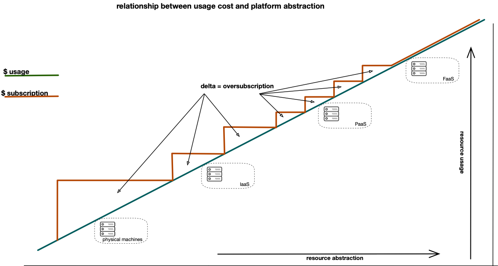

production ready MVP's
benefits of native serverless application development
chassis and architecture driven engineering
Slides: webconf2020.groklobster.io | slide source bit.ly/w3c-pres
serverless chassis: bit.ly/js-chassis | contact me: bruno@hypermedia.techthemes
- business and operational benefits and challenges
- what is a chassis
- key architectural concerns
- technical demonstration
our example - bank generic

our example - banc generic
focus

deploy the base services (orange)
themes
- business and operational benefits and implications
- what is a chassis
- key architectural concerns
- technical demonstration
benefits
- true pay as you go - orders of magnitude savings
- favourable shift in responsibility exposure
- low ops - development becomes operations
true pay as you go

favourable shift in shared responsibility
increased abstraction means less management

low ops
- nothing but application code to manage
- automate builds from test enabled repository
- simple declarative security per application
- environments deployed from templates with guardrails
development becomes operations
challenges
- horrify your friends in the enterprise DA
- but dont worry, devOps and secOps will come to love you
- enterprise doesnt like javascript
- open source all the way down.